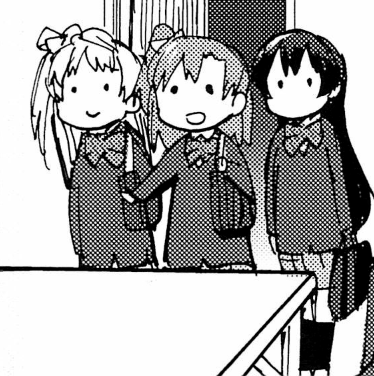
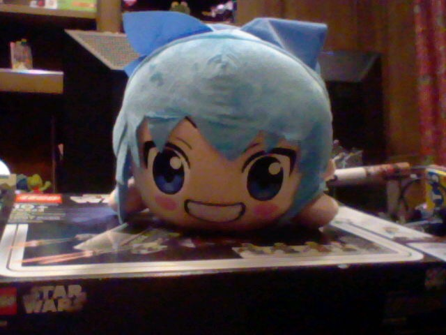

|
I have no clue how to start this! Get ready to see "I'm" alot. I'm Grady. I'm an unfortunate Texan who's a bit too deep into the internet.  I mainly work with Computers, which I have 30 of! I'm a hardware person more than a software person. I mostly work with OS X era software & Mac's, though I have interest and own stuff in the Windo7 Realm, 90's, etc. Broad and somehow also not. I like Touhou Project mainly, I'd say its my main interest. The Main Games, The Side Games, PC98 Era, Characters, Music, Doujin Work, everything. I have a deep love for Touhou Doujin Music, where I have around 64-ish CD's, and hope to get more! I also have many Plushie's, Keychain's, Figure's, Wall Scrolls even, Anything and everything. Besides aforementioned Touhou (and some general) Doujin Music, I mostly enjoy 90s to 2010s Music, anything in that real time period. From Indie Rock & Alternative bands like Wilco and The Strokes, to J-Rock & J-Pop like Soutaiseiriron and Nanawoakari, My likes are vast but not super focused or deep. Mostly Rock/Guitar based with some Pop/Electronic, and other influences. I'm also a Vocaloid/Vocal Synth fan, in terms of both music and general space. To end things off, I also have a great iPod Collection, which I try to actively use all iPods in! For other series and things and the such I like.. I'm a fan of Neptunia, Love Live, Haruhi Suzumiya, then Lucky Star obviously, Bocchi The Rock, Needy Girl Overdose, Madoka Magica, ETC. I like some basic games like kirby, pokemon, PuyoPuyo. theres way more I like, so please check out my Lists to see some more. Even if I'll never be able to write them all. For some extra general stuff, I have interest in the 2000s/2010s, but mainly in technology, web, gaming, etc. I believe alot of great stuff came from there, and that many things hit their peak there.. For other stuff, I'm into cars (though not SUPER deep or experienced), and I also like older racing games. I'm especially a big fan of the older Forza Games. I like Top Gear & The Grand Tour pretty deep as well. I'm unfortunately still a Star Wars fan, and related, I have a LEGO collection with some rare sets dating back to my childhood and siblings. I love SpongeBob to this day... And I own a Project Diva Arcade Cabinet, I like to flex that because it's cool.  There's much more im forgetting, so do check out Lists and Images and anything else for stuff related to me I may of missed. Thank you for your time. :) |
This website does it's best. Last Updated July 2025. |
|